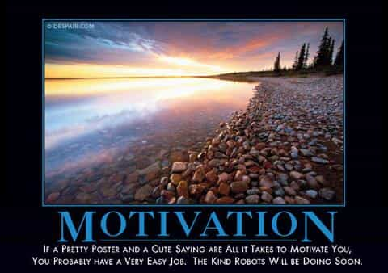
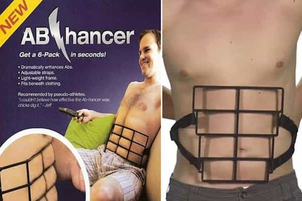

Corey is an iconoclast and the author of 'Man's Fight for Existence'. He believes that the key to life is for men to honour their primal nature. Visit his new website at primalexistence.com


Self-improvement in all its manifestations has been the rage for years now, becoming a huge industry on its own. Everyone is on the race to become better, resolve their insecurities and desires, and be successful as much as they can. But because of the sheer volume of self-improvement materials out there along with all the people who approach them with the wrong idea, the whole movement has turned into just another form of consumerism. Your never-ending journey towards self-mastery must now be done with the right mindset and implementations to get the most out them.
So, if you’ve been spending a lot of money and time without seeing much results, check out the following reasons to see where things might have gone awry.

Motivation has to be—by far—the most overrated aspect of achieving success and also the most often used excuse for lack of effort. I also notice that young people, especially, tend to whine most about motivation as they’ve been trained to do what they’re told all their lives instead of being motivated by their own volition.
Here’s a tip for beginners: forget about motivation. If you constantly monitor yourself to see how you feel before you start something, you’ll never accomplish anything. You can read some blog by pathological narcissists and watch lame Youtube videos to get “fired up,” but that emotional high isn’t going to last long enough for you to get anywhere. Instead, the ingredients for success are: organization, discipline, and perseverance.
But if you still insist on chasing motivation, I have a piece of good news for you: you can gain motivation by taking action. Yes, sucking-up and doing the plain old hard work will motivate you more than any amount of motivational garbage you entertain yourself with. Always remember that action must come first and that it’s all that matters in life.
When people are young and dumb, they feel invincible as though they can conquer the world tomorrow. I’ve met my share of individuals with delusional goals who thought they could achieve it all because they’ve been conditioned to feel entitled to all their heart’s desires. These people typically jump from one area of interest to another without sticking to it, giving up as soon as their fickle emotions fizzle out or when they realize just how much time and work is necessary to master them.
To avoid this mistake, understand that your time in this world is brief. You don’t know how short your life is until you get older and the reality hits you. So, learn to differentiate between what’s actually important for you to dedicate yourself to against all the things that you simply feel is important or interesting. Just because you find something cool and exciting it doesn’t mean that it is something worth jumping into.

We are living in quick times. People don’t want to be told that they have to work long and hard for what they want; they want easy solutions and see results NOW. Marketers know this, so they’ll deliberately exaggerate potential results and promise them in a short period of time to lure customers who gladly dish out their cash. I personally thought I was too smart to fall for this trick, but I gave in more times than I want to admit.
As a counter, remind yourself that nothing worthwhile ever comes fast and easy. Quick result might be possible for the gifted few in specific circumstances, but don’t aim for it. Go at your own pace and focus on the process and your efforts rather than the end goal itself; results will come in when they’re ready. And this brings us to the next point.
The surest way to be unhappy.
Being goal-oriented and constantly imagining how great things would be once you realize your desire is the fastest way to demoralize yourself. This is the reason why people quit the gym after few months or give up on learning a new language or a musical instrument only after cursory effort. They see the process as something horrible that needs to be overcome to realize their dream—and that’s the wrong attitude to have.
Instead of being goal-oriented, you must be process-oriented and enjoy every step of the way—your desire to learn and grow must be greater than the dream of having reached the end. To put in other words, have the goal as a guidance towards where you want to go, but don’t focus your attention on it. Another method to counter this goal-oriented thinking is to break down your project into smaller steps for the little victories. This is especially useful for those who have difficulty getting “motivated.”
Guess which demographic is most likely to use feel good bullshit as a means of “self-improvement.”
Unfortunately, there are too many junk information floating around in the self-help industry disguised as the real thing. Even popular and well-established guru like Tony Robbins and others are prone to making outlandish claims and believing in their own bullshit, leading to dozens of people with burn injuries (but I guess those people just lacked “faith” in themselves).
Here are some rule of thumb to screen self-help material that is most likely bogus:
If anything, just remember that if it sounds like bullshit, it probably is.

The elephant in the room regarding the self-help industry is that far too many people are buying and reading self-help materials without actually applying them in life. These people read the books and blogs the same way they do with novels: as mental stimulation. They jump from one book to another hoping that all the information they absorb will magically permeate into their lives while they barely (if at all) take any action to make things happen.
Your knowledge means nothing without action. It’s far better to read ten books and dedicate yourself to applying the knowledge to your life than to read 100 books and do nothing except fooling yourself into thinking that you’re wise and all-knowing. To pick the right materials, choose ones that help you organize your life and offer you practical ideas and guidance that you can follow through. It’s much better than going through materials that merely try to hype you up with emotions.
But above all, the best way to learn is through trial and error. The great men of past didn’t need any self-help mumbo-jumbo to achieve glory. Know that it is folly to overload yourself with information in hopes that you won’t ever make mistakes or experience failure. Mistakes and failures are process of learning. This is not to say that you should reject preparation: be prepared as much as necessary, but just not to a point where it impedes your ability to get started. I think a good ratio of time spent reading to doing is 20:80. If you happen to read more than you are doing, then you definitely need to get out more.
If you’re still having great difficulty achieving the goals you set for yourself and being satisfied with them, you should probably ask yourself why you wanted them in the first place. Why do you want more money, more sex, more strength, more knowledge, more travels, or more status? What is the core motivation behind your desire? Is this something you truly want for yourself or is it something that you’ve come to believe is important because the society told you so for years? Do you want to achieve greatness for petty and superficial reasons or to actualize your strive to assert who you are in this world? Are you being idealistic or practical?
Once you get your motives straightened out, it just might be possible for everything else to click in place and set you in motion. Sometimes, a burning purpose above all other mortal desires is all that a man needs in this world.
Read More: Self-Improvement Is Not Just For Young Guys